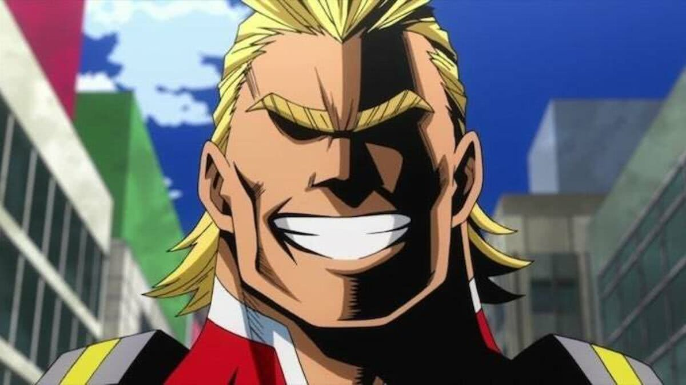

Toshinory Yagi
Toshinori Yagi (八や木ぎ俊とし典のり Yagi Toshinori?)Toshinori Yagi (八や木ぎ俊と し典の り Yagi Toshinori ? ), mais conhecido por seu nome de herói,All Might(オ ー ル マ イ トŌru Maito ? ) , é o tritagonista de My Hero Academia e o protagonista do arco do Hideout Raid Arc. All Might é o ex-herói profissionalnº 1 que carregou o título deSímbolo da Pazdo mundo(平和 の 象 徴Heiwa no Shōchō ? ). Ele leciona Estudos Fundamentais do Herói naUA High School.
All Might foi o oitavo titular do One For All Quirk depois de recebê-lo de Nana Shimura . Desde então, ele passou a tocha para Izuku Midoriya , a quem está treinando para ser seu sucessor. Depois de usar todas as brasas de One For All para derrotar All For One , All Might se aposentou e terminou sua era como o maior herói do mundo. [2]All Might (オールマイト Ōrumaito?), é o deuteragonista de My Hero Academia. All Might é o antigo Pro Hero No. 1 que teve o título de Símbolo da Paz. Ele ensina Estudos Fundamentais dos Heróis na U.A. High.
Personalidade
A persona do herói de All Might parece ser derivada de estereótipos de super-heróis de histórias em quadrinhos: exuberante e repleta de talento dramático. Ele sempre protege e salva inocentes, com um grande sorriso. O hábito de sorrir foi enraizado nele por sua mentora, Nana Shimura, que acreditava que quem sorri é o mais forte. Embora ele possa ser irritante às vezes, All Might é extremamente amigável e amigável devido à sua popularidade e anos sob os holofotes, sempre levando seu tempo para interagir com os fãs.
Uma vez que All Might retorna à sua verdadeira forma, ele se torna reservado e solene, evitando a atenção em contraste direto com a grandiosidade de sua identidade de herói. Embora seja um otimista, ele ainda garante que seus objetivos sejam baseados na realidade. Quando um Izuku Quirkless conta a ele sobre seu objetivo de se tornar um herói, All Might o elogia por ter um sonho, mas o lembra de ser realista e sugere que ele escolha outra profissão que ajude as pessoas. Ele considerou as palavras duras necessárias para salvar o menino da frustração de longo prazo. Nessa forma, ele frequentemente vomita sangue como um indicador de sua saúde frágil, embora isso possa acontecer se ele ficar surpreso ou divertido o suficiente. Dois traços de personalidade que parecem estar sempre presentes nele, independentemente da forma que All Might está assumindo atualmente, são seu otimismo e estupidez.
Desde sua juventude, All Might sempre teve um único objetivo, embora difícil, em sua mente: tornar-se um pilar de esperança no qual as pessoas sempre poderiam confiar em tempos difíceis. Depois de obter One For All de seu mestre, Nana Shimura, All Might se tornou não apenas um herói, mas uma lenda, graças à sua competência e carisma aparentemente infinitos. Não importa quem ou o que ele enfrentasse, All Might se levantaria triunfante todas as vezes, uma batalha após a outra, inspirando o mundo e enviando medo aos corações dos vilões em todos os lugares. Ele tem uma capacidade crônica de salvar o máximo de pessoas que puder, uma característica que compartilha com seu sucessor. Ele se exauriu e ficou para trás nas tarefas de outros heróis, como preencher a papelada. Embora estivesse envergonhado por isso, ele ainda aceitou com gratidão a oferta de Sir Nightsyee (mais tarde) Naomasa Tsukauchi para arquivar seus relatórios.
Depois de sua luta contra All for One, ele considerou necessário manter seu estado enfraquecido escondido do público, por uma questão de manter o moral elevado. Infelizmente para All Might, os ferimentos infligidos em seu corpo estavam começando a afetá-lo. Apesar da preocupação e advertências de alguns de seus associados próximos, a determinação de All Might em preservar a sociedade do mal o impediu de renunciar ao seu papel como o Símbolo da Paz. Seu sorriso, antes um gesto que servia para acalmar outras pessoas, começou a se tornar mais uma forma de All Might esconder seus medos e inseguranças da população em geral. Com o passar do tempo, All Might começou a esquecer alguns dos princípios básicos do heroísmo, até Izuku, em uma corajosa tentativa de salvar Katsuki Bakugo do Vilão de LamaO ataque de apesar de ser Quirkless, reacendeu seu espírito heróico e lhe ensinou que algo sempre pode ser feito para combater a injustiça.
Acima de tudo, ele considera o auto-sacrifício a ação mais nobre. Isso vem em muitas formas para All Might, como fisicamente no campo de batalha, mas também mentalmente, sacrificando muito de seu tempo, ele mal tem uma vida privada. Ele acredita tanto neste valor fundamental que abandonou os preparativos de Sir Nightsye para um sucessor por capricho após testemunhar o único ato de abnegação de Izuku para salvar Katsuki. Esta altruísmo serviu a todos para se tornar um símbolo, pois os civis confiam em suas palavras, "Não tema", sabendo verdadeiramente que ele não hesitará em salvá-los. A rejeição de sua própria segurança eventualmente o pegou, causando problemas tanto em seu trabalho quanto em sua vida pessoal. Como professor da UA, ele não podia deixar de se distrair ajudando as pessoas em seu trajeto matinal, encurtando seu tempo com seus alunos. Também afastou All Might de Sir Nighthye, que discordava sobre se deveria evitar sua morte profetizada ou continuar o trabalho de herói. All Might tentou ignorar sua morte profetizada, mantendo-a em segredo de Izuku por um longo tempo. NoA pedido de Inko Midoriya , ele ganhou uma nova resolução para evitá-lo completamente. Ele encontrou um valor maior em sua própria vida, sabendo que Izuku precisava dele como um mentor, não apenas um salvador.
Izuku comparou a personalidade do All Might ao seu mentor Gran Torinojá que ambos aparentemente se fingem de idiotas com frequência. All Might é na verdade mais inteligente e perceptivo do que sua imagem exagerada poderia sugerir. Ele tem uma mente tática quando se trata de estratégias de batalha e falar em público. Avaliando o nível de ameaça de um vilão, ele aplicará habilmente a força necessária e evitará ferimentos quando possível. Se ele estiver no controle, ele até fará uma performance dramática com a derrota, como um exemplo para outros vilões. Sua presença por si só diminuiu a taxa de criminalidade no Japão em 3%. Ele está ciente das táticas do vilão, como monologar, e as ignora ativamente. Apenas os vilões mais manipuladores, como All For One, podem trazer à tona casos raros de raiva em All Might, como pegá-lo desprevenido e causar-lhe um ferimento mortal, e fazê-lo afirmar amargamente que All for One morreria na prisão.
Apesar de sua inteligência de batalha, seus grandes poderes e fama o tornam dissociado das capacidades dos outros, e Gran Torino afirma que isso o torna inadequado para o ensino. Às vezes, All Might subestima seus alunos e, como resultado, é enganado. Sem experiência de ensino, ele exigiu um roteiro para transmitir sua primeira lição para a Classe 1-A . Ele também é repreendido ocasionalmente por seu colega professor, Eraser Head, por estar às vezes indisponível para as suas funções de ensino. No entanto, All Might trazendo sua atitude típica em seu ensino pode ser benéfico, criando um ambiente energético e motivador. Embora seus colegas de trabalho da UA o respeitem como um herói profissional, eles podem ficar frustrados com o conflito que sua presença traz para a escola, como atrair jornalistas. Ele também enfrentou críticas da mídia por atrair vilões para a UA.
Principalmente para Izuku, ele tem o hábito de se projetar no protegido, superestimando seus limites. Embora All Might pudesse usar One for All 100% instantaneamente, Izuku sofreu graves ferimentos ao fazê-lo. Depois de várias repreensões da Garota da Recuperação por encorajar o comportamento autodestrutivo de Izuku, os dois perceberam que ele precisava ser seu próprio herói individual. Isso se reflete quando All Might disse à Endeavor, depois de assumir seu lugar como o número 1 Pro Hero, para descobrir por conta própria qual símbolo ele queria ser. Embora All Might deseje inspirar outros, ele não é hipócrita e vê o valor de diferentes ideologias. Ele tem um respeito por outras profissões fora dos heróis, especialmente a polícia, quando os outros tendem a subestimá-los. Embora All Might tenha boas intenções, sua persona impecável causou algumas consequências de longo prazo. A sociedade tornou-se excessivamente dependente dele e, em casos extremos, seus admiradores deliraram com o que é realista. Por exemplo, o vilão Stain impõe os padrões que All Might estabeleceu para cada Herói, matando aqueles que ele acredita terem falhado.
All Might sempre prioriza a vida dos outros em detrimento da sua, considerando-os sua responsabilidade. Ainda assim, All Might está profundamente ciente de que salvar todos no mundo é uma tarefa impossível, e é por isso que ele procurou se tornar um símbolo que pudesse inspirar outros a agirem também. Enquanto All Might é visto sorrindo, rindo e sendo alegre na maior parte do tempo, ele é extremamente protetor com seus alunos, mostrando um raro exemplo de raiva se eles estiverem em perigo. Ele está disposto a ir além de seus limites pela segurança deles, certificando-se de aliviar suas preocupações por meio de seu sorriso característico.
All Might tem uma atitude paternal para com seus alunos (seu sucessor Izuku, em particular) e se orgulha de ajudar seu desenvolvimento como futuros heróis, sendo rápido em dar conselhos encorajadores e celebrar suas realizações, mas ele também não tem medo de pressioná-los ainda mais se ele acabar indo longe demais. All Might tem o hábito de adicionar "jovem" (少年Shonen ? ) Ao sobrenome de seus alunos sempre que está falando em voz alta ou pensando consigo mesmo (ex. "Jovem Midoriya").
No entanto, durante o Arco dos Exames Finais , de todos os professores, ele é, de longe, o mais implacável. Como sua persona de herói, All Might pode representar um vilão teatral, fazendo isso para trazer à tona todo o potencial dos outros com um amor rude. Sua pura intimidação por si só era, de acordo com Izuku, semelhante à de Stain. Quando Katsuki afirmou que preferia perder do que buscar a ajuda de Izuku, All Might estava mais do que disposto a forçar Katsuki a perder. Ele também deu um soco em Katsuki forte o suficiente para ele vomitar, mostrando que ele não iria se conter e que está disposto a machucar seu aluno se isso significar que ele passará nos exames corretamente. Ele iria até mesmo quebrar as costas de Izuku, bem como esmagar os dois sob sua bota (o que lhe rendeu uma séria repreensão da Garota da Recuperação).